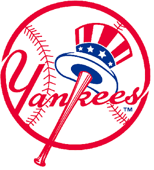

American League
Yankees
Guess who's back after a year hiatus from October baseball? The boys in the pinstripes. If you ask someone in the Bronx, it probably feels like the last time the Yanks were still in contention, Mr. October himself was lacing up. Behind a 6 foot 7 inch monster of a right fielder, NY can hit the long ball (and a lot of them) if they get hot.
Houston
No problems here... Houston may not be the blue chip, tradition-rich team on this list, but they are just as capable to do serious damage and find themselves playing for a WS title. Their hero, Jose Altuve, may be short in stature (5 feet 4 inches). But, what he lacks in height he makes up for in hits, homeruns, and heart.